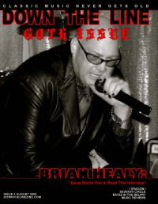

<!DOCTYPE PUBLIC "-//W3C//DTD XHTML 1.0 Transitional//EN" "http://www.w3.org/TR/1/DTD/1-transitional.dtd">
 xmlns="http://www.w3.org/1999/" xml:lang="en" lang="en">

<head>
<meta http-equiv="Content-Type" content="text; charset=utf-8" />
<title>Brian Healy profile - timeline view :: CMnexus</title><link rel="stylesheet" href="../articles.css" type="text/css" title="CMnexus" /><meta name="viewport" content="width=device-width" /><meta name="title" content="Brian Healy profile - timeline view :: CMnexus" /><meta name="color-scheme" content="light dark" /><meta name="description" content="An index of works written by Brian Healy, viewed as a timeline." /><meta name="theme-color" content="#669966" /><meta name="theme-color" content="#25282a" media="(prefers-color-scheme:dark)" /><meta name="keywords" content="Brian Healy, writings" /><link rel="canonical" href="Brian_Healy" /><link rel="image_src" href="../images/covers/D_T_L2009_8__pr20.jpg" /><link rel="help" href="../about/" /><link rel="home" href="../" />
<script type="application/ld+json">{"@context":"http:\/\/schema.org","@type":"MusicGroup","name":"Brian Healy","album":[],"isFamilyFriendly":true,"image":[{"@type":"ImageObject","contentUrl":"http:\/\/cmnexus.org\/images\/covers\/D_T_L2009_8__pr20.jpg","caption":"Brian Healy featured on Down The Line, August 2009"}]}</script>
<link rel="apple-touch-icon" type="image/png" href="../apple-touch-icon.png" />
</head>
<body bgcolor="#000067" text="#000000" link="#000066" vlink="#000066" alink="#660000" itemscope itemtype="http://schema.org/WebPage">
<table bgcolor="#FFFFFF" width="100%" cellspacing="0" cellpadding="8" class="p100pc" id="maintable">
<tr valign="top" class="">
<td bgcolor="#669966" colspan="2" class="navcolor noprint p0tnytny navtop" style="padding-bottom:0px" itemscope itemtype="http://schema.org/SiteNavigationElement">
<div  id="pagehead" class="tnytnytnyonlyin">
<b><a href="../"
title="CMnexus" border="0" class="img" align="center">CMnexus</a></b>
<span class="smalltnytny tnytnytnyonlyoff">: <i>Contemporary Christian culture, music, and media.</i></span>
</div>
<ul class="navbar nodisc din" style="padding-top:.5em;">
<li class="pr2em din mainnav" ><a title="Browse magazines" href="../magazines/">Magazines</a></li>
<li class="pr2em din mainnav" ><a title="Browse artists &amp; authors" href="index">Profiles</a></li>
<li class="din mainnav" ><a title="GMA Dove Award nominees and winner listings" href="../awards/Dove_Awards">Dove Awards</a></li>

</ul>

</td>
</tr>
<tr valign="top" class="vaT">
<td class="vaT" id="cocol" width="*">
<div class="vaT flL b600" itemprop="breadcrumb"><span class="printonly">cmnexus.org</span><a class="noprint tnytnyonlyoff" href="../" title="Front page of the CMnexus" itemprop="url"><span class="tdn">CM</span>nexus</a><span class="tnytnyonlyoff"> &rarr; </span><a href="index" title="Root index of all artists: Choose letter" rel="up up" itemprop="url"><span itemprop="name">Profiles</span></a> &rarr; <a href="H" title="All artists whose names begin with 'H'" rel="up" itemprop="url"><span itemprop="name">H</span></a></div><h1 class="sectiontitle clB mb0">Brian Healy</h1><div class="m600px m0px" itemscope itemtype="http://schema.org/MusicGroup"><table class="flR flNtnytny"><caption class="smcap"><b>On the cover</b></caption><tr><td align="center" class="lineC q3e pbia"><a href="../magazines/Down_The_Line/2009/page4" title="Contents of Down The Line Aug 2009, #4" class="pp" ></a><br />August 2009<br /><span class="magazine">Down The Line</span></td></tr></table><h2 class="mt25pcempr mb1pr">Media coverage:</h2><ul class="mt0"><li class="neg15em">Jul 1992 in <span class="magazine"><a href="../magazines/Notebored/1992/page1" title="Contents of Notebored Jul 1992">Notebored</a></span> "Brian Healy" </li><li class="neg15em">Jan 1993 in <span class="magazine"><a href="../magazines/Syndicate/1993/page1" title="Contents of Syndicate Jan 1993, v. 8, i. 1">Syndicate</a></span> "Doing A Solo", by <a href="Chris_Well/writing/page2" title="Writing credits for Chris Well, page 2">Chris Well</a> </li><li class="neg15em">Aug 2009 in <span class="magazine"><a href="../magazines/Down_The_Line/2009/page4" title="Contents of Down The Line Aug 2009, #4" class="pp" >Down The Line</a></span> "Brian Healy / DAS: Jesus Wants You to Read This Interview", by <a href="Steve_Ruff/writing/page1" title="Writing credits for Steve Ruff, page 1">Steve Ruff</a> </li><li class="neg15em">Oct 2010 in <span class="magazine"><a href="../magazines/Down_The_Line/2010/page4" title="Contents of Down The Line Oct 2010, #8" class="pp" >Down The Line</a></span> "Sterling Part 2", by <a href="Steve_Ruff/writing/page2" title="Writing credits for Steve Ruff, page 2">Steve Ruff</a> </li></ul><h2 class="pbaa mt25pcempr mb1pr">Books about Brian Healy</h2><ul class="mt0">
<li itemscope itemtype="http://schema.org/Book" class="neg15em">"<span>Dead Artist Syndrome</span>"  in <i itemprop="name" class="book">The Encyclopedia of Contemporary Christian Music</i> (<span itemprop="author"><a href="Mark_Allan_Powell" class="profile"  title="Profile of Mark Allan Powell">Mark Allan Powell</a></span>, <span itemprop="datePublished">2002</span>).</li><li class="nodisc">Chapter also includes:  <a href="Dead_Artist_Syndrome" class="profile"  title="Profile of Dead Artist Syndrome">Dead Artist Syndrome</a>.</li>
</ul><h2 class="pbaa mt25pcempr mb1pr">Published articles:</h2><li class="nodisc">7 articles credited in <i class="magazine">CCM</i>: 1981 - 1982.</li><ul><li class="nodisc"><a href="Brian_Healy/writing/page1" title="Writing credits for Brian Healy">Credits list</a></li></ul></div></td><td class="noprint lineC" style="min-width:150px;" width="150px" itemscope itemtype="http://schema.org/WPSideBar" id="rsidebar"><div><b>CMnexus</b> <i>(noun)</i><br />The magazine index<br />of modern music<br />and Christianity<br /></div></td></tr><tr class="smalltnytny" itemscope itemtype="http://schema.org/WPFooter"><td id="footer" class="navcolor pbnw" colspan="2"><div class="lineC">&copy; 2011 CMnexus. Last updated May 2025.<span class="printonly"> Contact: </span> <span class="noprint"> Rants and other correspondence to: </span> <!--BL-->editor -AT- cmnexus<span class="noshow"><!--BL--></span> -D&Oslash;T- org <a title="About the Nexus, general information" href="../about/" class="noprint">About</a></div></td></tr></table></body><>